The Tension 問題の核心
The portal had been built incrementally over years — features layered on top of features without a unifying structure. The same account information appeared in multiple places with different interaction patterns. Users couldn't complete basic tasks like making a payment without navigating through redundant screens. Service call volume was climbing because users couldn't self-serve. このポータルは長年にわたって増築的に構築されていた。統一的な構造なく機能が重ねられた結果、同じアカウント情報が異なるインタラクションパターンで複数箇所に散在。支払いのような基本操作すら冗長な画面遷移を経なければ完了できなかった。セルフサービスできないユーザーからのサービスコールが増加していた。
My Approach アプローチ
I led a discovery audit to find the structural root cause — not to catalog every problem. The insight: the portal's issues weren't cosmetic. They stemmed from a complete absence of design infrastructure. Each feature had been designed in isolation, with no shared components. The fix had to work at two levels: rebuild critical flows for immediate impact, and create a system to prevent recurrence. I prioritized 4 of 10 flows based on frequency × pain severity — account setup, login, summary, and payments. すべての問題をカタログ化するのではなく、構造的な根本原因を見つけるためにディスカバリー監査を主導した。インサイト：問題は表面的ではなく、デザインインフラの欠如に起因していた。解決策は2レベルで同時に機能する必要があった。利用頻度×深刻度で10フローから4つを優先した。
Tools & Methods ツール＆手法
Outcome 成果
The redesign modernized the customer experience and reduced customer service call volume by removing the friction that drove most support requests. The 125+ component design system set the visual and interaction precedent later adopted across the bank's other digital products. リデザインによりカスタマーエクスペリエンスが刷新され、サポートリクエストの主因となっていた摩擦が解消されたことでカスタマーサービスへの問い合わせ件数が減少した。125以上のコンポーネントで構成されたデザインシステムは、後に銀行の他のデジタル製品にも採用される視覚・インタラクションの先例となった。
What changed 何が変わったか
Priority Flows — The 4 That Mattered Most 優先フロー — 最も重要だった4つ
01 — Set Up Online Access: First contact with the portal. Reduced from a multi-page form to a streamlined onboarding. 01 — オンラインアクセス設定：ポータルとの最初の接点。複数ページのフォームを効率的なオンボーディングに簡素化。
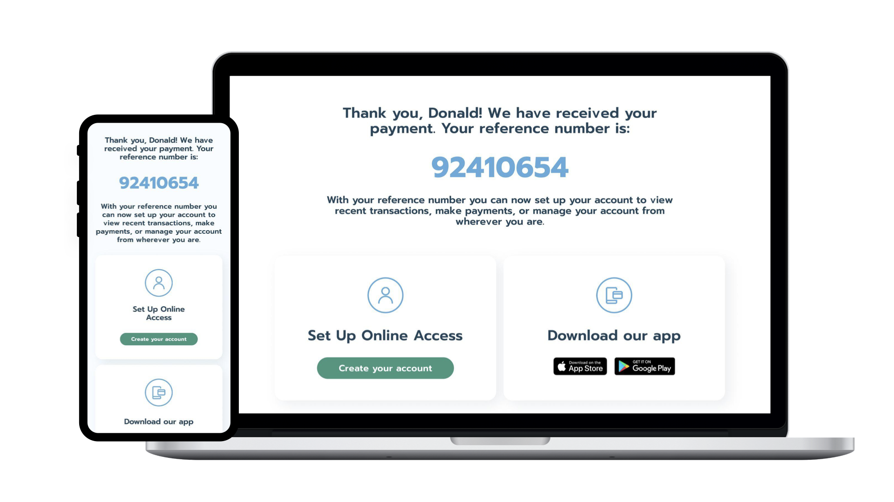
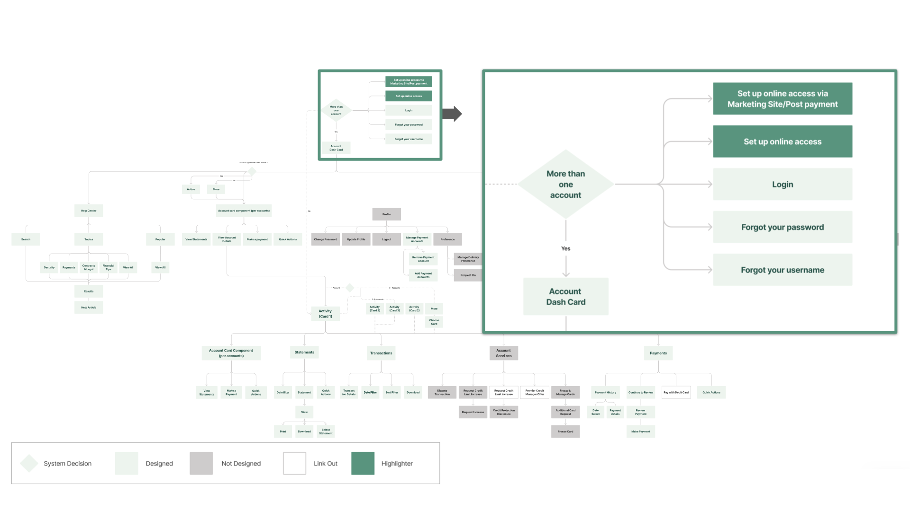
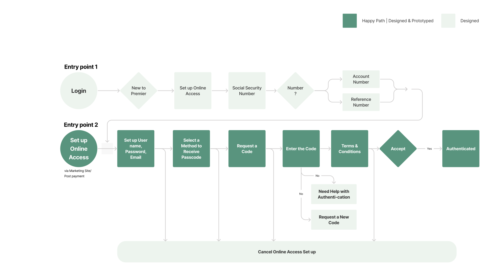
02 — Login & Authentication: Simplified credential recovery, clearer error states. 02 — ログイン＆認証：パスワード復旧の簡素化、エラー状態の明確化。
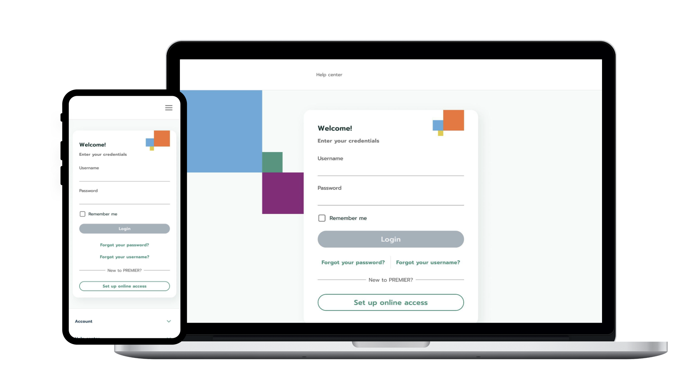
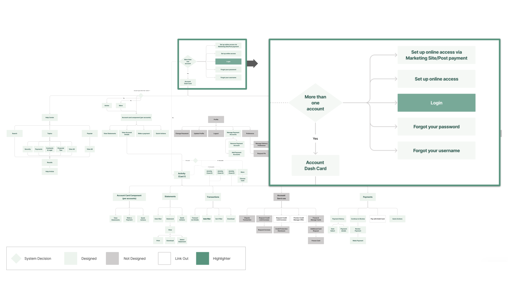
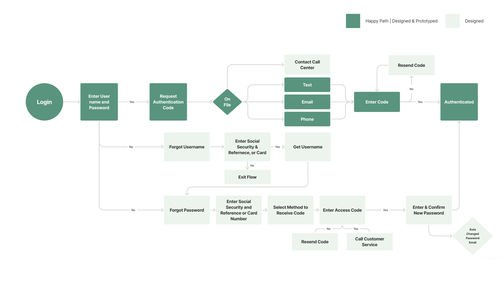
03 — Account Summary: The highest-traffic screen. Consolidated balance, recent transactions, and quick actions into a single view. 03 — アカウント概要：最もトラフィックの多い画面。残高、最近の取引、クイックアクションを1画面に統合。
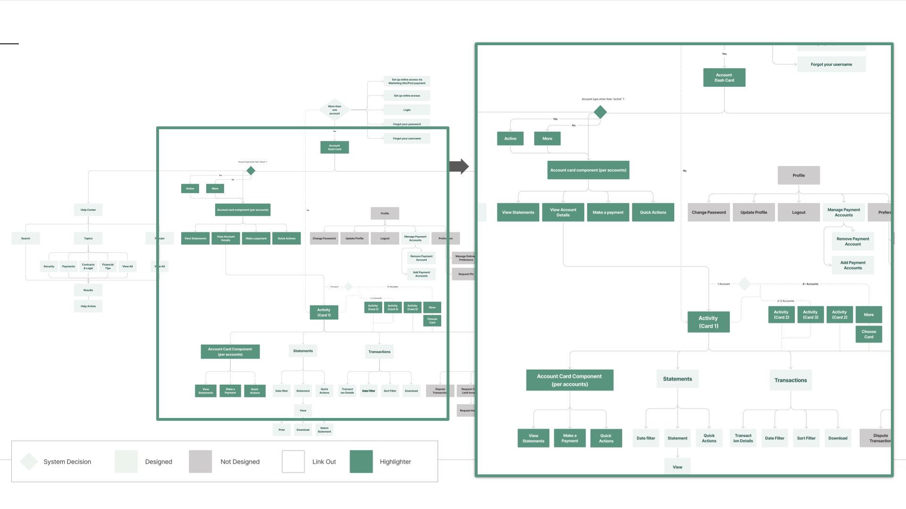
04 — Make a Payment: The #1 driver of service calls. A three-step flow replaced a five-screen process. 04 — 支払い：サービスコールの最大要因。5画面のプロセスを3ステップのフローに置換。
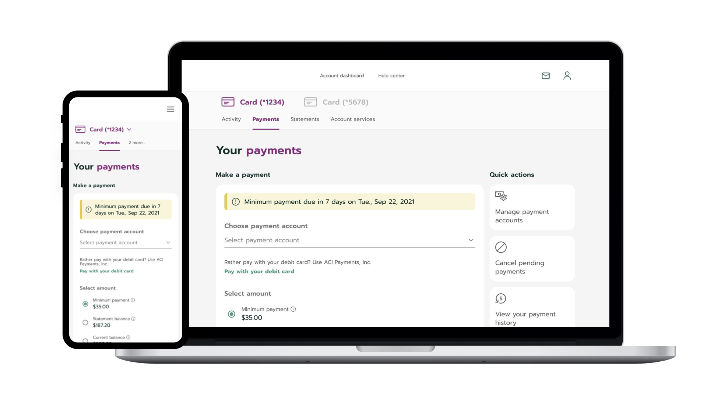
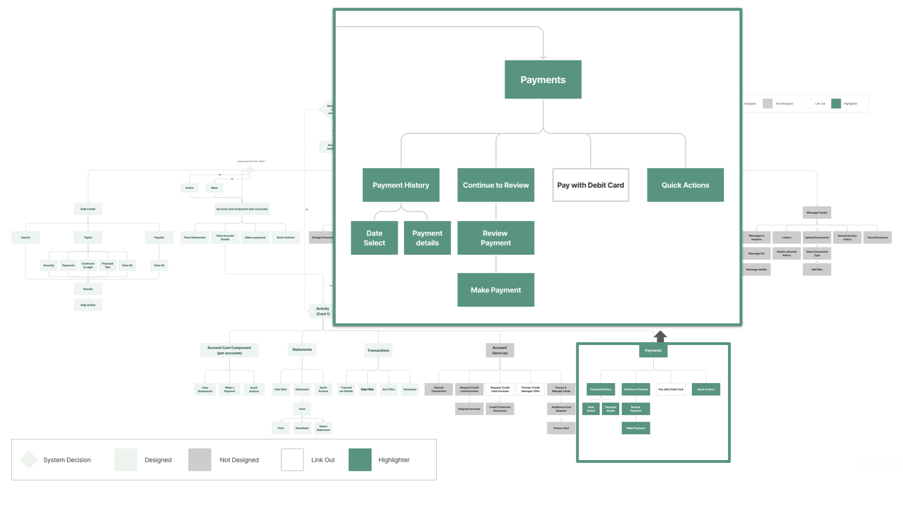
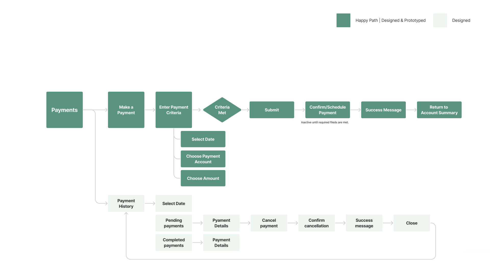
Design System — 125+ Components in 3 Layers デザインシステム — 3層構造に125以上のコンポーネント
- Color tokens (primary / neutral / semantic)カラートークン
- Typography scale (7 levels)タイポグラフィスケール（7段階）
- Spacing system (4px base grid)スペーシングシステム（4px基準）
- Grid system (12-column)グリッドシステム（12カラム）
- Elevation & shadow tokensエレベーション＆シャドウトークン
- Form elements (inputs, selects, validation)フォーム要素
- Navigation (tabs, breadcrumbs, menus)ナビゲーション
- Data display (tables, cards, charts)データ表示
- Feedback (alerts, toasts, modals)フィードバック
- Actions (buttons, links, CTAs)アクション
- Authentication flows認証フロー
- Transaction patterns取引パターン
- Account managementアカウント管理
- Error recovery sequencesエラー復旧シーケンス
- Onboarding templatesオンボーディングテンプレート
Design System Documentation — Style Guide & Component Library デザインシステム資料 — スタイルガイド＆コンポーネントライブラリ
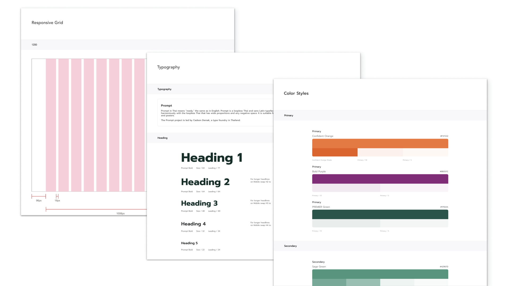
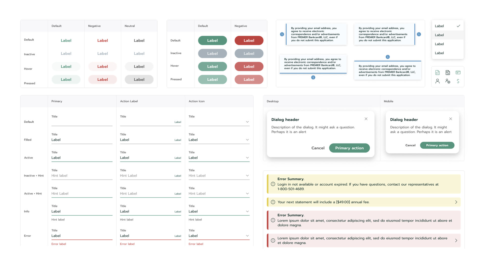
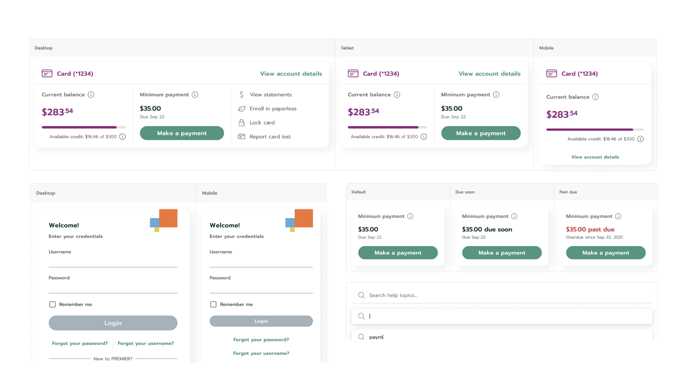
The Shift — From Portal Fix to Organization Standard 変化 — ポータル改修から組織標準へ
Deliverables 成果物
- User Research & Insight Generationユーザーリサーチ＆インサイト
- UX Strategy & Customer Journey MapsUX戦略＆CJM
- Wireframing & Prototyping (14 prototypes)ワイヤーフレーム＆プロトタイプ
- UI Design (105 hi-fi screens)UIデザイン（105画面）
- Design System (125+ components)デザインシステム（125+コンポーネント）
Methods 手法
- Discovery Auditディスカバリー監査
- Stakeholder Interviewsステークホルダーインタビュー
- Concept Testingコンセプトテスト
- Iterative Prototyping反復プロトタイピング
Organization 組織
Concentrix Catalyst — engaged as the bank's design partner. I led design direction, system architecture, and screen delivery across the full engagement. Concentrix Catalyst — 銀行のデザインパートナーとして参画。デザインの方向性、システムアーキテクチャ、画面納品をリード。